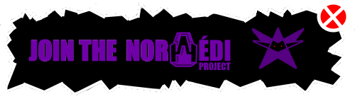

Recruté en 2030 par Gabriel Frouard, Aloïs Barraud devient le cerveau derrière l'IA de la "Cyclosphere". Leader acharné, il dirige l'équipe de développement qui permet à SkyMotors Company de dominer le marché mondial grâce à ses systèmes anti-crash. À cette époque, il est pressenti pour devenir le successeur naturel de Frouard.
C'est également sous son impulsion que sont lancées les démarches d'expansion européenne qui porteront l'entreprise à 158 concessionnaires sur le continent, ainsi que les premières négociations ayant abouti à l'entrée de
Melon Musk
au capital de SkyMotors en 2036. Mais la plus part du travail est effectué par son successeur
Raphaël Hidier,
qui n'en était à l'époque que le coordinateur technique.
Lors du test de la "SkyMotors : BlueOffice" conduite par Mr Barraud. Le véhicule percute violemment le rugbyman Lucien Dubreuil. Aloïs est instantanément renvoyé par son ancien ami attristé et banni de l'industrie automobile américaine par le Président de l'époque Feral Encheso.
Aloïs déménage à Genève en 2039, où il rencontre Giovanni Tibiano, qui lui propose le poste de Dark Giovanno dans l'une de ses enseignes.
